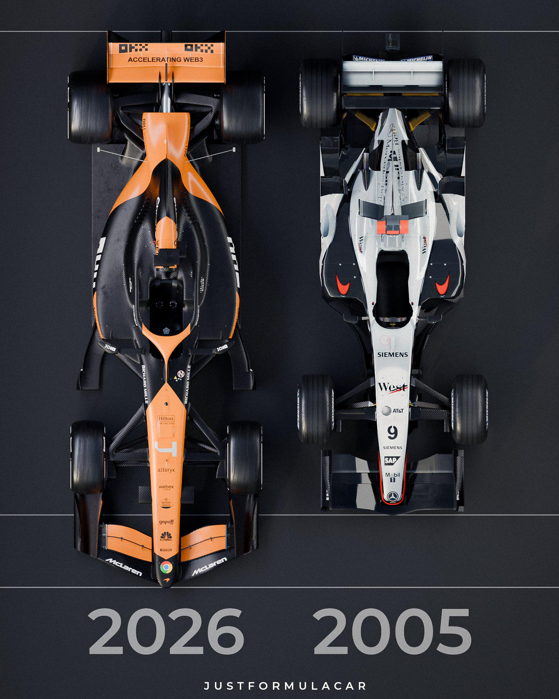

Últimas notícias da Formula 1
Estamos em março de 2026, e a Fórmula 1 vive um momento de revolução total com a entrada do novo regulamento técnico. O clima é de incerteza e muita disputa, já que os novos carros e motores mudaram a hierarquia do grid.
O Início da Temporada e o GP da China
A temporada começou com surpresas. Após as duas primeiras etapas (Austrália e China), a Mercedes parece ter se adaptado melhor às novas regras, enquanto a Red Bull enfrenta dificuldades.
Kimi Antonelli brilha: O jovem piloto da Mercedes já conquistou sua primeira vitória no GP da China, sendo comparado a lendas como Ayrton Senna pelo seu início fulgurante.
Hamilton na Ferrari: Lewis Hamilton finalmente quebrou seu jejum e conquistou seu primeiro pódio com a escuderia italiana na China, trazendo esperança para os "tifosi".
Verstappen insatisfeito: Max Verstappen criticou duramente o novo sistema de gestão de energia, chegando a comparar as corridas atuais com "Mario Kart" devido à facilidade de ultrapassagem com o novo "modo boost".
Mudanças no Calendário
A FIA anunciou recentemente o cancelamento dos GPs do Bahrein e da Arábia Saudita que ocorreriam em abril, devido à escalada de conflitos no Oriente Médio. Isso criou um hiato inesperado na temporada.
Próxima parada:
GP do Japão (Suzuka): 27 a 29 de março.
Data da postagem: 20/03/2026 as 00:01h